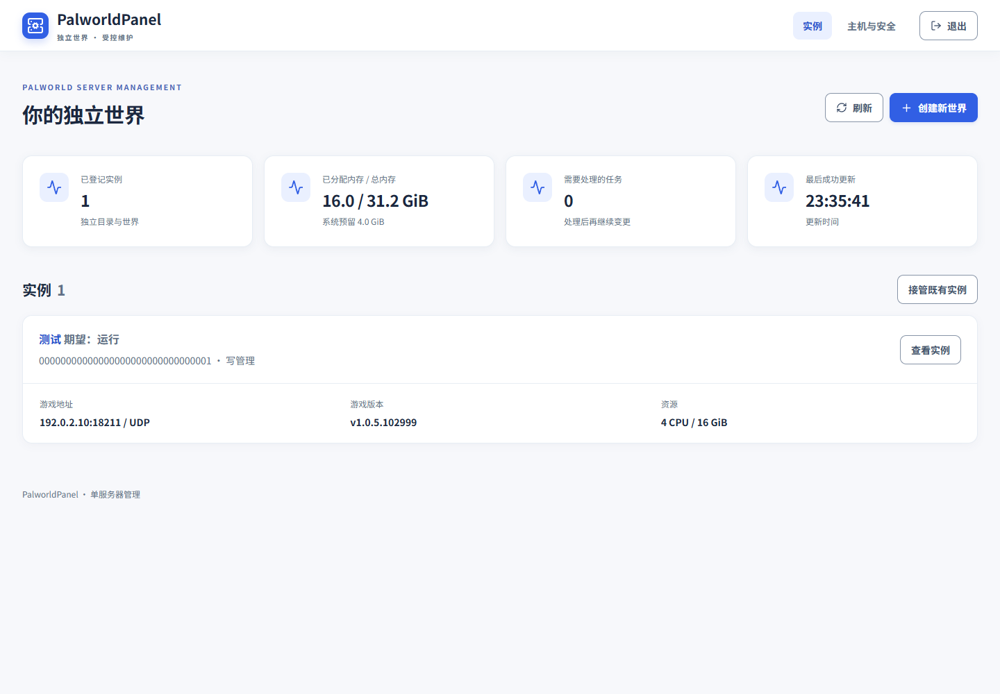
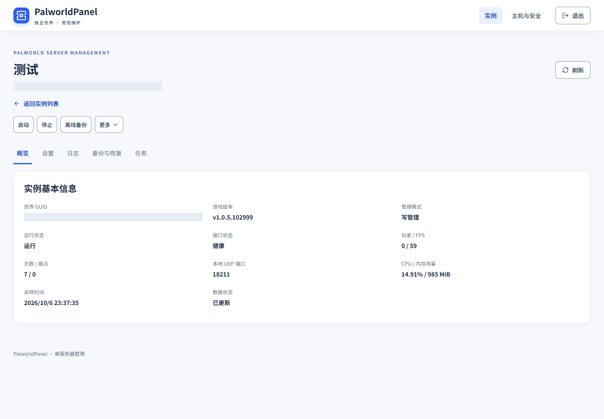
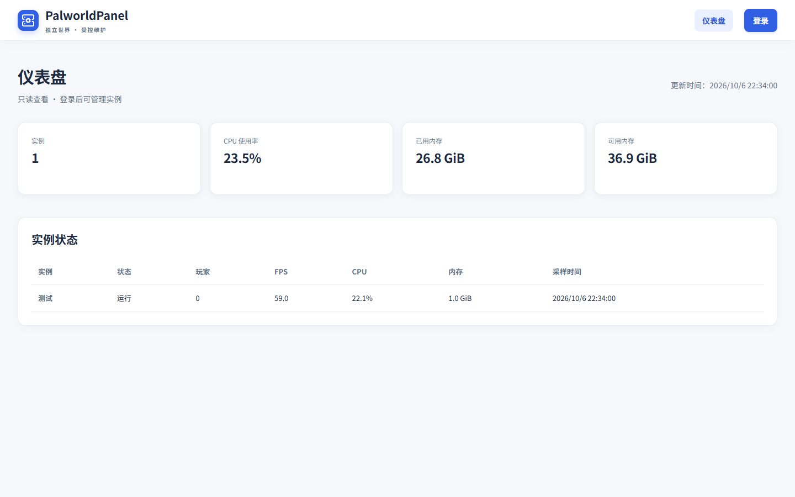
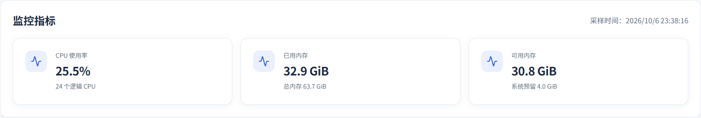
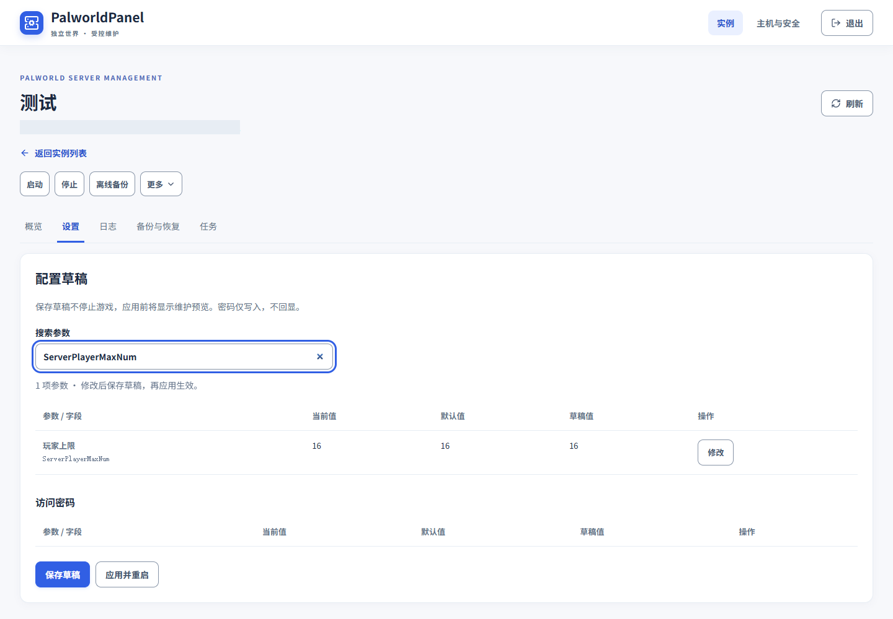
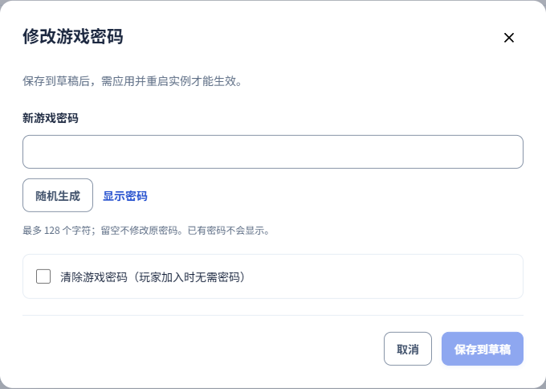
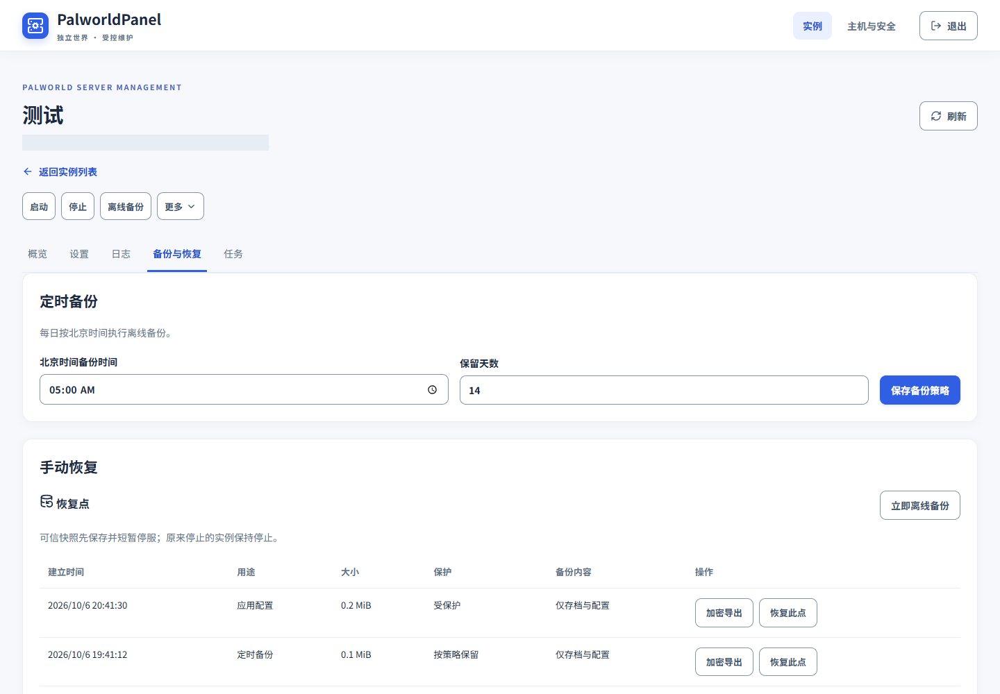
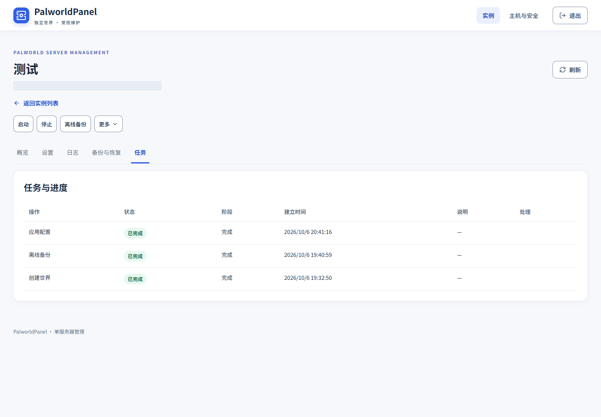

功能说明
了解实例管理、参数草稿、备份恢复与访问权限。
独立世界与实例管理
每个实例使用独立的存档目录、容器、密码、端口、备份和任务锁。可创建新世界，也可受控接管已有实例。
实例列表显示运行状态、游戏版本、资源配置和游戏连接地址。进入详情查看基本信息、设置、日志、备份与恢复和任务。




仪表盘与运行状态
白名单中的访问者可在未登录时只读查看仪表盘。登录后才能执行实例管理操作。
创建实例后可查看初始化阶段与任务进度；日志按最新记录优先显示。主机监控指标、历史记录和操作记录分别展示。




参数与密码草稿
参数以中文名称和字段显示，支持搜索；列表对照当前值、默认值和草稿值。修改未应用时，高亮对应草稿。
密码支持手动输入与随机生成，仅显示设置或修改状态，不回显密码。保存草稿不会应用到游戏；确认应用后，面板执行配置更新与重启，期间锁定应用按钮。




备份与恢复
定时备份与手动恢复分区展示，可查看恢复点并进行加密导出。导出使用独立口令，下载后请妥善保存。
恢复与世界 ZIP 导入按受控流程执行，在需要时先备份并停止目标实例。只恢复对应世界，避免影响其他实例。


维护与任务
启动、停止、离线备份及更多菜单中的操作都有二次确认。任务位于实例详情中，记录执行阶段与结果。
升级、移除容器保留数据、隔离清理等操作需仔细阅读确认内容。管理接口健康并不能代替真实游戏客户端连接验证。


支持的平台与访问范围
Windows 面板注册为系统服务，帕鲁实例通过 Docker Desktop Linux 引擎运行；Linux 面板与游戏通过 Docker 运行。
面板具有本机 Docker 管理权限，仅允许明确白名单中的内网地址访问。公网 UDP 转发不属于面板管理范围。